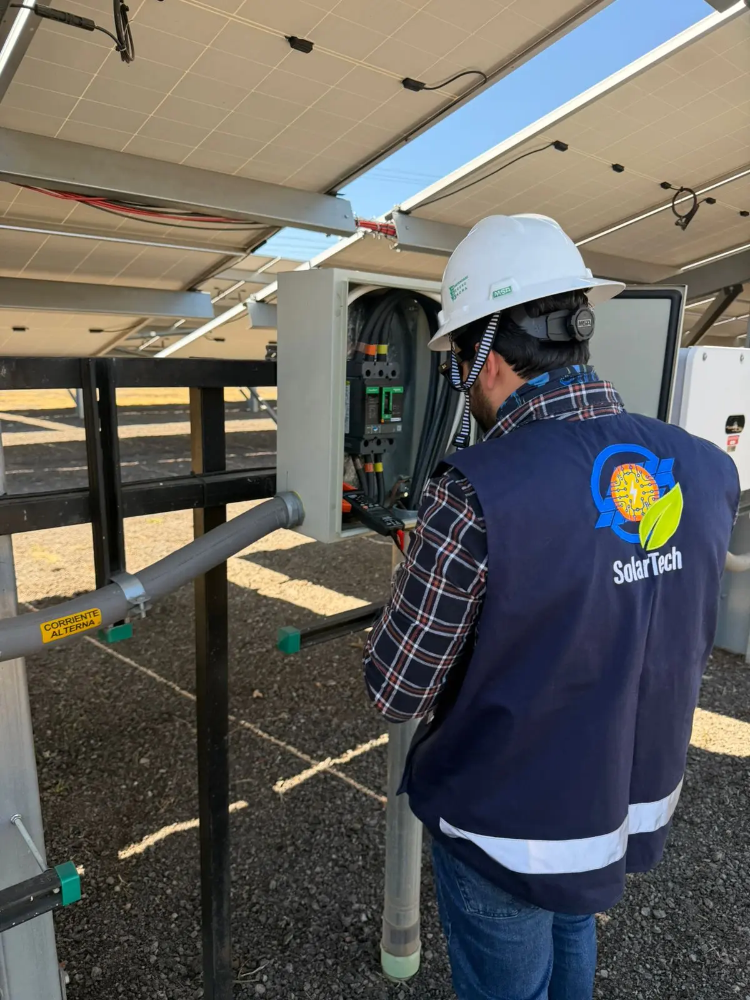
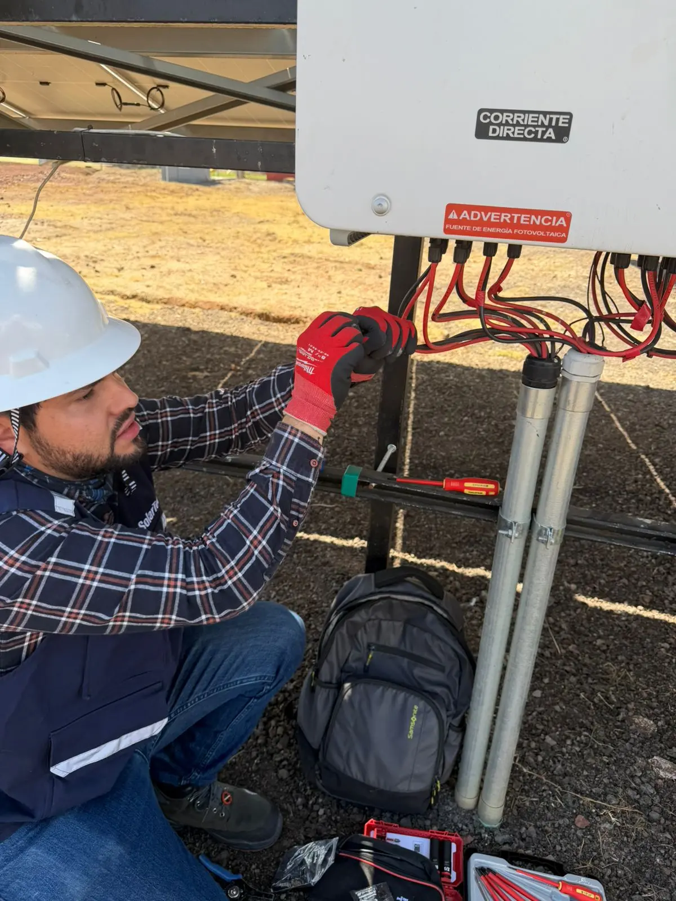
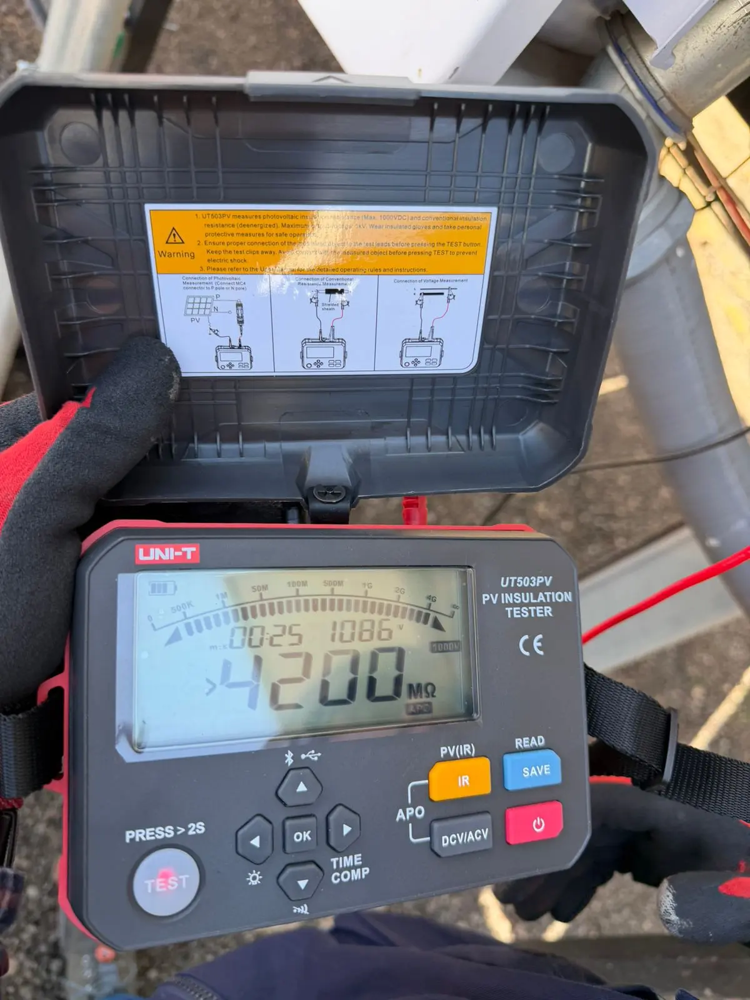
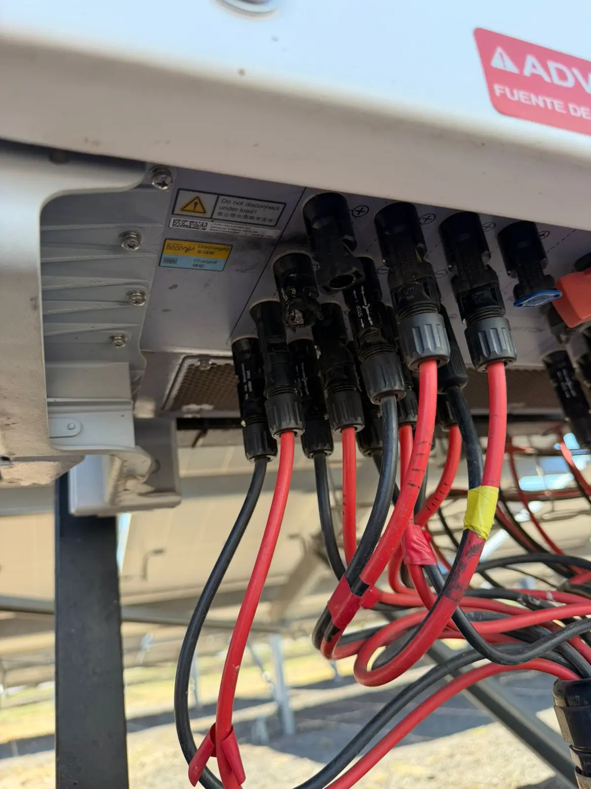
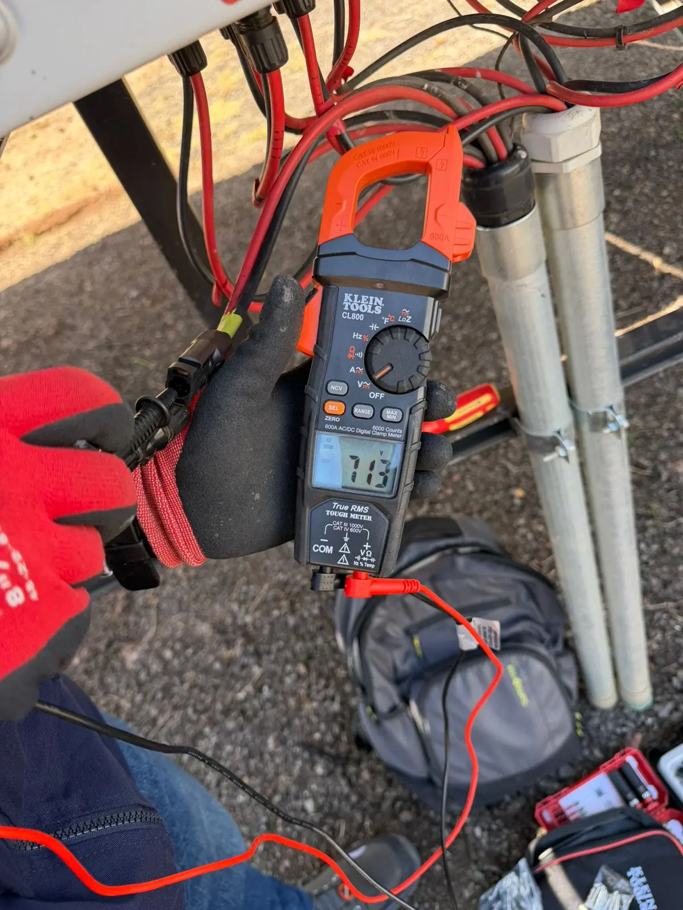
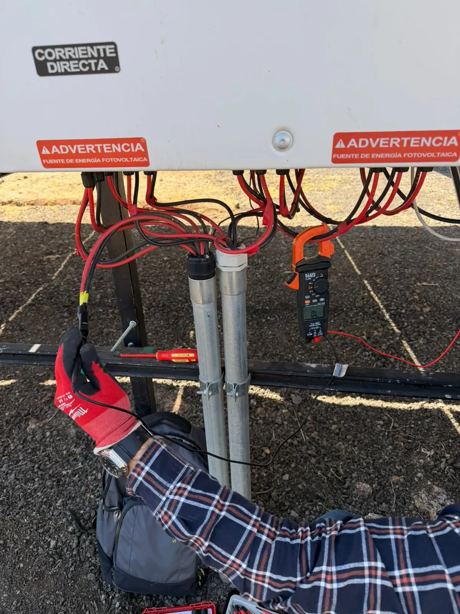

01Mantenimiento Correctivo
Diagnóstico, corrección y normalización de fallas en inversores y arreglo fotovoltaico para restablecer el desempeño óptimo del sistema.

Diagnóstico, corrección y normalización de fallas en centrales solares fotovoltaicas para asegurar una operación segura, confiable y eficiente.
Mantenimiento correctivo y pruebas de resistencia de aislamiento para asegurar la operación segura y confiable de la central fotovoltaica.

01Diagnóstico, corrección y normalización de fallas en inversores y arreglo fotovoltaico para restablecer el desempeño óptimo del sistema.

02Pruebas IR en circuitos DC/AC para identificar fugas a tierra y condiciones anómalas que puedan comprometer la seguridad eléctrica del sistema.

03Revisión de entradas MPPT, seccionamiento, protecciones, conectores y puntos críticos de conexión para garantizar la integridad del circuito.

04Verificación eléctrica completa posterior a cada intervención para confirmar las condiciones de operación segura y el correcto funcionamiento.
Imágenes reales de nuestros servicios de mantenimiento correctivo y pruebas de aislamiento.

Contáctanos para una inspección técnica y diagnóstico sin costo.